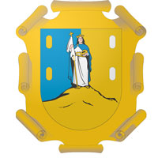

En la época prehispánica el territorio que ahora ocupa el estado de San Luis Potosí comprendía las áreas culturales de Mesoamérica y Aridoamérica. Su parte norte y centro-oeste fue habitada por las tribus otomíes y chichimecas, los cuales eran muchos grupos indígenas, principalmente cazadores y recolectores, lo que los obligaba a vivir sin asiento fijo; en el este y sureste aún habitan los grupos huasteco, xi, o'ui o pame y náhuatl. En 1592, se descubrieron depósitos de oro y plata, con esto se inició el desarrollo de la zona. Los mineros se congregaron a poblar donde ahora se asienta la ciudad de San Luis Potosí, y Juan de Oñate fue nombrado el primer alcalde de «Pueblo de San Luis de Mezquitique». Se le dio el nombre de "San Luis Rey" en honor a Luis IX de Francia, y "Potosí" porque se comparó con las ricas minas de plata en la actual Bolivia, en espera de rivalizar con estas, aunque esto nunca se cumplió. En los siglos XVII y XVIII, franciscanos, agustinos, y jesuitas se establecieron y empezaron a edificar iglesias y edificios, muchos de las cuales aún siguen en pie y se han convertido en universidades y museos. A mediados de 1821, después de la Independencia de México, el general José Antonio Echavarri intimidó al Intendente y al Ayuntamiento a la rendición de la plaza de San Luis al Ejército de las Tres Garantías de Iturbide. Ellos se sometieron a su exigencia, pues no había manera de resistir, y así se proclamó la Independencia de San Luis Potosí. Después, se dictó la primera Constitución Política del Estado de San Luis Potosí el 16 de octubre de 1826, y esta estuvo vigente hasta 1835 en que el Congreso Nacional decretó el sistema Centralista. Así desaparecieron las Legislaturas locales y los gobernadores fueron nombrados por el gobierno central. Esta situación subsistió hasta que se promulgó la Constitución de 1857. La participación del estado potosino en la Invasión Americana en los años de 1846-1847 hizo que fuera llamado «San Luis de la Patria» por haber aportado gran cantidad de caudillos y elementos. En la Guerra de Reforma, la participación del estado potosino fue muy destacada, y durante la Intervención Francesa en 1863, la ciudad de San Luis Potosí fue declarada capital del país por el presidente Benito Juárez. Durante el régimen del emperador Maximiliano de Habsburgo, San Luis Potosí fue convertido en departamento. La ciudad estuvo en poder de los imperialistas hasta fines de 1866. En ese año fue inaugurada la línea telegráfica entre la ciudad de San Luis Potosí y la ciudad de México.San Luis Potosí posee una provechosa ubicación en el territorio mexicano debido a que es un punto intermedio entre las tres ciudades más importantes del país: la Ciudad de México, Monterrey y Guadalajara y entre 4 grandes puertos de altura: Tampico, Altamira, Manzanillo y Mazatlán. Además, sus climas variados, así como su red carretera y ferroviaria la cual satisface sus necesidades de intercambio comercial, le permiten ser uno de los pocos estados del país en los que se puede desarrollar una infraestructura empresarial importante. El impacto económico del estado se debe a varios factores como el turismo, la industria y su ubicación geográfica que permite el desplazamiento rápido de productos a casi cualquier parte de la República Mexicana. Sin embargo, este desarrollo económico solo se ve en la capital del estado, lo que ha motivado una gran migración a la zona conurbada de las zonas rurales así como a otros estados vecinos como Nuevo León y Tamaulipas y principalmente a los Estados Unidos. No obstante ha experimentado en los últimos meses un crecimiento económico (especialmente en la ciudad capital San Luis Potosí), debido a políticas locales que han aprovechado su ubicación geográfica. Hoy en día se han desarrollado una gran cantidad de Parques Industriales que han impulsado al sector manufacturero e industrial. En especial en la industria automotriz, a partir de la llegada de una planta armadora de General Motors, instalada en el 2012, En el 2015 se inició la construcción de una planta armadora de BMW, lo que coloca a San Luis Potosí dentro de los tres estados con mayor enfoque automotriz en México. La comida típica en San Luis Potosí se compone por tradición indígena principalmente de maíz, que al fusionarse con la comida española incorpora carnes como la de puerco y de pollo. Su variedad es grande y se pueden disfrutar platillos como el fiambre potosino o los famosos tacos rojos de queso, servidos con zanahorias y papas asadas, espolvoreados con queso fresco. Los postres incluyen el queso de tuna y los elaborados con leche de cabra como natillas y cajetas o las tradicionales campechanas de Santa María del Río. Los platillos cambian dependiendo de la zona geográfica: en la Huasteca son tradicionales los tamales de hoja de plátano así como el zacahuil, en el Altiplano son característicos el asado de boda y la barbacoa de hoyo, en la Zona Media los antojitos como quesadillas, flautas y gorditas mientras que en la Zona Centro las enchiladas potosinas son el platillo principal.
